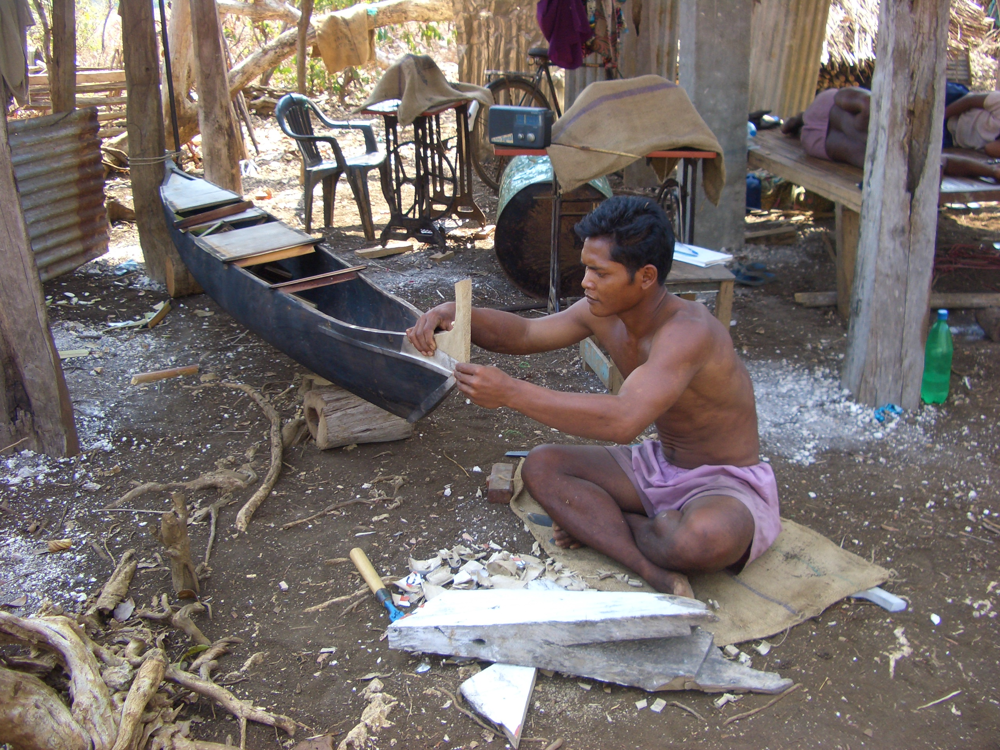

- Title Page
- Introduction
- The Islands and the Anthropologist
- Tsunami and First Response
- Wading In
- Second Tsunami
- In Search of Axes
- Steering a Sustainable Course
- Steering Committee
- Exchange Visit
- Nirnay Means Decision
- Up and Running
- Caritas Leans In
- Singh Sounds a Warning
- Midcourse Correction
- The SOPHIA Experiment
- Taking Stock
- SOPHIA Reports
In Search of Axes
Jonathan, chief of the traditionalist community of Chowra Island, was particularly unhappy. Chowra had been especially hard hit by the tsunami, and the government had relocated Jonathan’s people to a refugee camp on nearby Teressa Island, where Singh found them living under tarps, eating rice and lentils, and mourning their dead. Though a hastily erected wooden sign bravely welcomed them to “Chowra Camp,” Jonathan knew this was no home for his people.[20]
Jonathan’s people had lost their pigs, their boats, their ancestors’ bones, and their own bearings. They were becoming quarrelsome and they were losing initiative. Jonathan felt they needed to get hold of themselves, find their traditional compass, and take action, so he harangued them, and the Chowrites came up with a plan. They would build boats on Teressa, then sail home, rebuild their communal houses and plant their gardens with bananas, pineapples, jackfruit, and vegetables.

© Simron Singh
Repairing a traditional watercraft
In Jonathan’s opinion, and that of many of the older generation, the Nicobarese did not need tsunami aid. They could feed themselves and fend for themselves. They just needed to go home. “We may die but we have to go back,” Jonathan said. “What will we do here? We need to work.”[21] But first they needed tools, because theirs had washed away in the tsunami. The Nicobarese used specialized adzes and chisels to build their boats, and a particular kind of axe to fell and strip the young trees they used to frame their large thatched-roof houses. These were native tools that the Nicobarese had obtained from Malay Burma traders for generations. No others would do, as became clear after a shipment of off-the-shelf tools sent by an NGO proved so flimsy they could barely cut fruit.
In late February, the Nicobarese appealed to Singh to help them get tools. Singh was confident he could deliver. After all, he was well acquainted with the Indian commissioner overseeing disaster relief in the islands; the two were sharing a room and a satellite phone in the government guesthouse on one of the islands, and they sat down together periodically with the Tribal Council to discuss the government’s plans for tsunami aid. But the tools request didn’t fly. A large order of tools was already on order from Punjab, the commissioner said; they would arrive in the Nicobars in two months.
Nicobarese in the refugee camps.
© Aftermath-The Second Flood, Golden Girls Filmproduktion, 2014
Two months? But the monsoons would be starting soon. The Nicobarese pressed their case, but ran into another objection. “We are going to build you houses anyway,” Singh recalls the government saying. “Why do you want tools? We'll give you everything.” In the logic of humanitarian aid, Jonathan’s modest, hand-built, self-determined proposal was setting the sights too low.
Nicobarese in the refugee camps.
© Aftermath-The Second Flood, Golden Girls Filmproduktion, 2014
Singh was incensed. Here were native peoples showing resilience and self-reliance in the face of disaster. How could their culture survive if the government and NGOs stood in their way? Singh helped the Tribal Council draft a letter of need, then called Caritas in Vienna, and within a week he and Rasheed were on a plane to Bangkok, where they persuaded several bewildered shopkeepers in the Chinatown district to ship 3,000 axes and 3,000 sarongs to the Nicobars. Caritas had transferred the funds, €25,000, with no objection. This, Singh felt, was how humanitarian aid work should be done.[22][23]
[20] Information for this section comes from Lundberg’s interview with Singh, Singh’s book The Nicobar Islands, and the documentary film Aftermath, op. cit.
[21] Singh, The Nicobar Islands: Cultural Choices in the Aftermath of the Tsunami, p. 199.
[22] Tribal Councils of Nancowry and Kamorta and the Nicobar Youth Association, “Requirements of Tools and Women’s Loin Cloths in the Nancowry Group of Islands,” March 1, 2005, in SIF files.
[23] Procuring the axes was more difficult than Singh had anticipated, despite his long experience with traders, border control agents, and shipping bureaucracy in Asia. Among the difficulties was communicating to taxi drivers that he and Rasheed were looking for “axes.” The taxi drivers all thought they were looking for “sex.”
Video - http://www.aftermath-thesecondflood.net/